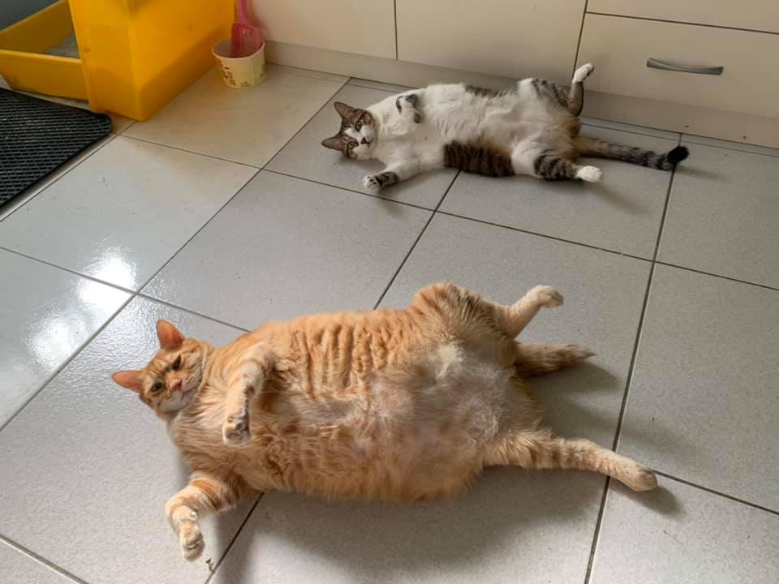
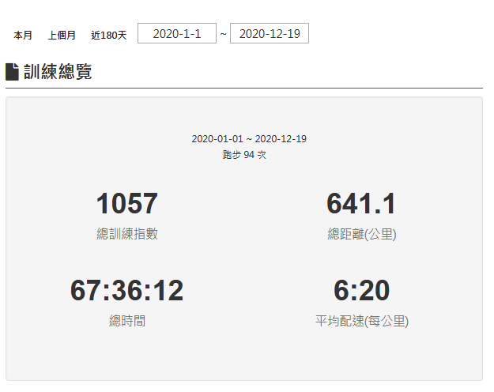
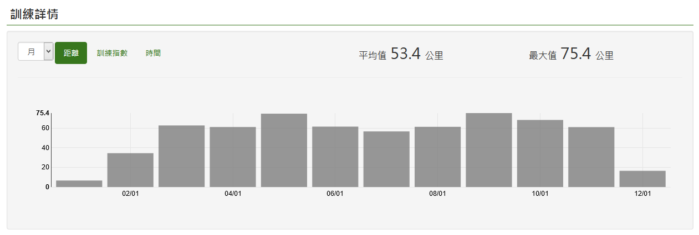
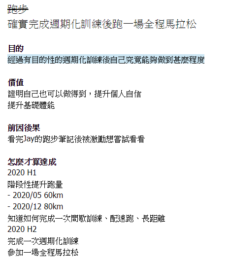
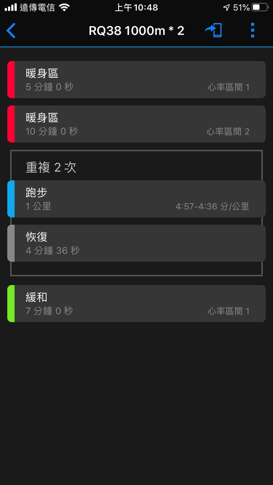
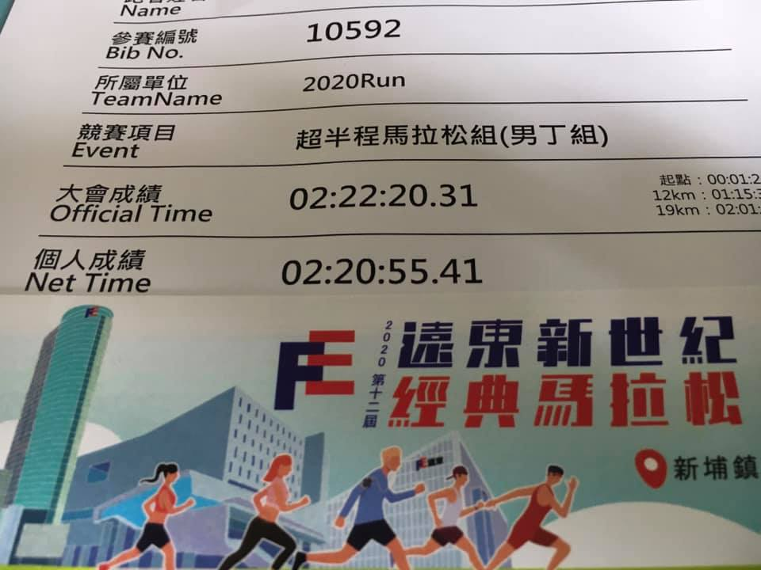
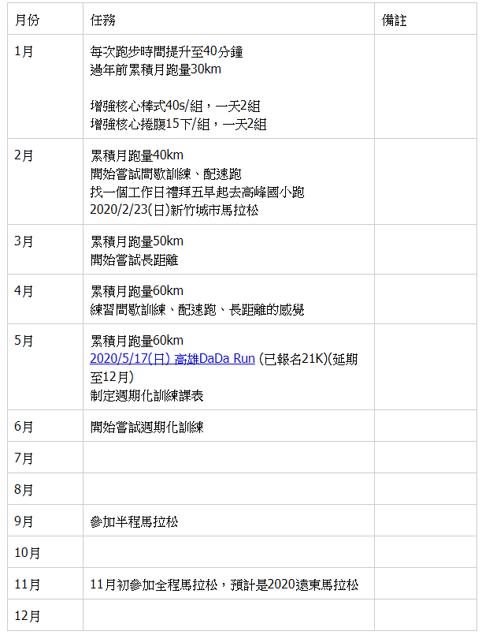
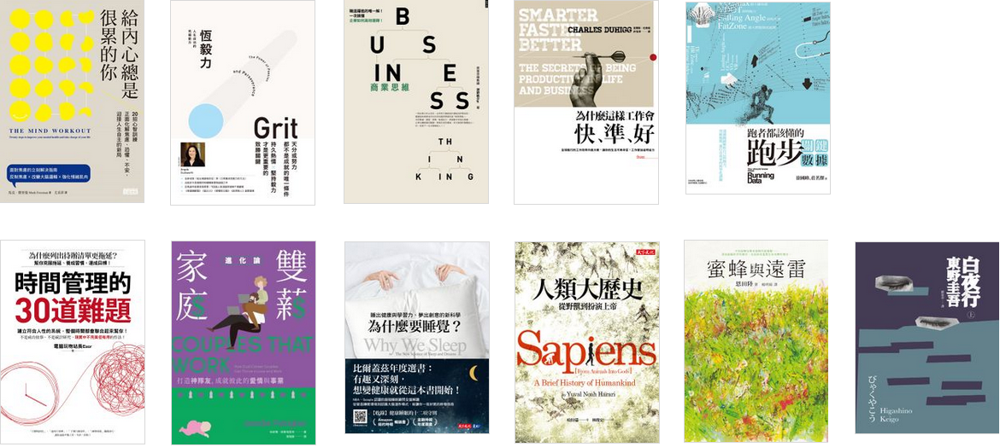

source: unsplash

混沌且焦慮的一年, 除了COVID-19侵襲世界的這件大事, 自己在生活, 工作和心理狀態也是非常混沌
透過運動試圖緩解, 也用KOBO電子書閱讀器看了不少書, 意外地發現看書時能夠讓自己平靜下來, 也找到目前比較適合自己的節奏是一個月2本書, 1本工具書, 1本小說類, 大多數都是搭大眾運輸和睡覺前的時間閱讀
主要回顧幾個部份: 關於離別, 跑步, 我的2020推薦書籍
關於離別
8月底左右, 女友養的橘貓皮拿走了, 記得那天中午在公司門口接到電話聽到女友泣不成聲, 自己也忍不住地掉淚
雖然和牠相處的時間只有去桃園時短短的週末兩天, 也有一些回憶
記得有時和女友一起煮東西時, 牠會在流理臺附近找個好位置用一個奇妙的姿勢坐著, 因為體積比較大, 都會被說釘樓XD
是個愛吃鬼, 看到或聞到可能是好吃的東西一定衝第一, 很喜歡用脖子蹭人的腳, 也很有自己的脾氣
謝謝你了, 回家吧

跑步

source: RunningQuotient

source: RunningQuotient
641 km算一算大概是環半島的距離吧XD
前因後果
2019年年底看完<Jay的跑步筆記>後被激勵想嘗試看看, 經過有目的性的週期化訓練後自己究竟能夠做到甚麼程度, 於是去年底開始試著計畫, 想要達成的結果是能夠跑一場全馬
大方向是先階段性提昇月跑量然後試試看在書中看到的一些訓練方式, 例如: 配速跑, 間歇訓練, 長距離, 然後知道怎規劃週期化訓練課表, 實際操練一遍後參加全馬

以下為事後的的紀錄
1月份
- 每次跑步時間從30分鐘提升到40分鐘
- 累積月跑量30km
2月份
- 間歇跑初體驗
- 第一次使用心率表的訓練模式，覺得很不錯，可以隨時看一下當下有沒有達到設定的標準，即時回饋
- 累積月跑量40km

3月份
- 累積月跑量50km
4月份
- 紀錄竹22路線距離: 第一段2K(高鐵，永興橋，大路交叉口）- 第二段4K(我大矽谷山莊）- 第三段0.5K(7-11)
- 累積月跑量60km
5月份
- 累積月跑量70km
6月份
- 看完<跑者都該懂得跑步關鍵數據>, 系統化補充了一些觀念
- 累積月跑量60km
7月份
- 累積月跑量60km
8月份
- 累積月跑量60km
9月份
- 基礎體能測試
- E配速：5:20 - 6:00
- 90分鐘
- 第10分鐘: 153-154bpm
- 第90分鐘: 169-170bpm
- 心率飄移：9.7-11%
- 累積月跑量70km
10月份
- 2020遠東馬-超半馬22K
- 以6分速預估加上一些緩衝時間，預計2:30:00-2:20:00
- 實際: 2:22:20
- 最後一公里小腿已經hold不住半走半跑
- 累積月跑量68km

11月份
- 累積月跑量60km
12月份
- 累積月跑量: 22 + 30(12/19後的預估量) km
對照事前的拆解

小結
有完成的部份
- 階段性提昇跑量: 從1月到5月, 慢慢從月跑量30拉到70, 體會到
循序漸進的重要性, 若叫我1月份直接跑70km的話直接不幹XD - 設定4組訓練模式: 方便以後直接從跑錶開啟訓練: RQ38 1000m * 2, 測量T配速, 測量最大心率, 測量有氧基礎體能
- 基礎體能測試OK
沒有完成且可以改進的地方
- 間歇訓練, 配速跑, 長距離還是很不熟, 一些觀念和操作細節需要實作和練習
- 沒有完整跑過一次週期化訓練後參加馬拉松的訓練
- 沒有參加全程馬拉松
得到一個心得: 問心無愧才能夠走得長久, 10月底參加遠東馬拉松，參加比賽前興奮與期待感和比賽中的專注是因為有了1-10月的累積跑量，這種感覺我稱之為問心無愧
我的2020推薦書籍
今年的閱讀量是23本, 20本工具書, 3本小說
工具書看的當下很有感, 但過一段時間就會忘記且容易紙上談兵, 這問題可以留待之後想想看怎做會更好
而且閱讀都是工具書會很功利且僵化, 於是今年想透過小說找到一些不同的樂趣XD, 實驗證明是有找到的
分享其中讀完後會想再次閱讀的11本書

給內心總是很累的你
想像你今天要當一日保姆照顧一群吵鬧不休的幼兒, 在開車的時候他們在後座哭鬧, 尖叫著那些你現在受苦不已的念頭, 感受和衝動
某個小女孩正在尖叫著她如何討厭你或某個小男孩大聲哭鬧著說你一定會失敗
這是書中提到的一個練習情境, 這些小孩就如同大腦念頭不斷丟出的恐懼, 焦慮和不確定感, 我就如同那個駕駛, 靠著回應每一個焦慮和恐懼感的念頭生活著, 結果哪裡也去不了QQ
回應恐懼會造成一些外顯性的行為, 作者稱為強迫性行為, 用來處理, 檢查或控制不確定感, 焦慮或你所不喜歡的感受的任何行為, 連結到自己在諮商過程中發現為了降低期望且讓自己有台階可以下而貶低自己的行為就符合這個形容
書中提到其中一種處理方式ACT, 接納與承諾治療(Acceptance and Commitment Therapy), 幫助學習如何與不確定感共處, 接受不確定感作為生活的一部分, 採取行動時仍舊接受恐懼的存在
對自己來說, 在處於大量不確定感的情境下, 例如: 找停車位, 旅行, 就會陷入焦慮, 我需要告訴自己沒關係並允許焦慮與恐懼存在並選擇價值觀採取行動
書中每一個章節後面都附帶一個拆解成實際步驟的練習, 不會淪為純粹理論與案例說明, 覺得還不錯
恆毅力
討論成功的核心因素之一, 恆毅力
書中與天賦, 熱情和興趣相關的想法值得反思, 例如: 培養熱情而非天下降下一道聖光後就能夠擁有熱情
算是以不同的角度看待所謂的成功人士
商業思維
從盈利的角度出發, 從上到下清楚地拆解影響營利的因素, 收入和成本, 再延伸到客戶運營, 例如: 獲取與留存的方式,
本次消費滿千送百, 但這些優惠券下次消費才能使用, 而且限定於特定時間內
這個常見的手法就是一種讓客戶留存的關鍵: 建立閉環, 還有另一種閉環是這次檢查完後直接幫你安排好下次的時間…等等, 像自己在新竹半年會去洗牙一次的診所就是用這種方式XD
也終於了解為什麼網站和電子信訂閱都要想盡辦法要讓我留下聯絡方式, 例如: e-mail, 因為名單就是資產, 我留下這個資訊代表我會是他們的潛在客戶
此外, 從數據的角度出發, 討論什麼樣的數據可以掌握公司現況, 例如: 掌握一家公司的收入狀況, 先看產品和通路的一維數據, 再看產品x通路的二維數據, 大致上便可掌握七到八成
對一家公司在營利組成的面向, 客戶, 產品, 策略有個初步的了解
為什麼這樣工作會快準好
書中提到的概念如下: 動機, 團隊, 注意力和心智模型, 目標, 創新, 資訊
和注意力相關的章節中提到2009年法航四四七號班機飛機失事案例, 連結了注意力會在現代自動化和手動之間切換的過程當中發生一些問題, 造成認知隧道現象
此外, 也討論為什麼一樣是碰到焦頭爛額的時間壓力, 有些人做出好的選擇, 有另一些人則手忙腳亂, 舉了新生兒加護病房的護士為例, 翻譯使用瀕臨崩潰組和對比的臨危不亂通靈組, 蠻有梗的XD
在自己的日常生活中比較類似事件的像是正式環境出狀況時需要介入處理且會有時間壓力
整體來說, 內容以例子介紹理論且都會讓自己有反思的空間, 算是蠻推薦的一本
跑者都該懂的跑步關鍵數據
體能要怎麼量化? 從最大攝氧量開始討論到和心率的關係
說明六種訓練強度區間以及每種區間的訓練目的, 快有快的目的, 慢也有慢的目的, 最後要看如何分配比例
知道了各種關鍵數據但要如何測量呢? 書中提出找到自己的心率區間, 找到自己的配速區間和如何確認自己的有氧體能基礎已經打穩的方法
整體來說透過書中的講解, 可以略知數據的來龍去脈和其目的, 比較踏實且有系統性
時間管理的30道難題
電腦玩物站長Esor出的一本書, 平常就有看他的部落格文章, 實用程度很高
這本書最打到我的點在於作者提到的情境和處理方式都是符合人性的而不是高大上或是要進入超人模式的
放下那種要自我犧牲的角度, 善用一些具體的方法, 回頭為工作與生活中的目標, 好好重新選擇成果
我們不會因為犧牲工作, 家庭就自然和樂，除非我們有效選擇能夠為家庭創造的成果
雙薪家庭進化論
二姐推薦的書, 在雲端圖書館借來看, 後來買了電子書
作者研究了來自四大洲, 三十二個國家, 多元樣態(種族, 宗教, 國籍, 異性同性戀)的一百一十三對夫妻找到了一些共通模式: 從交往到退休會經歷三次轉變
有點類似指南, 說明了轉變的起因, 關鍵問題以及會面臨的困境, 建議的修正方式
提到一個共同協商的溝通工具, 覺得有受到啟發, 大意是需要在價值觀, 底限和恐懼這三個層面溝通協商並找出共同點, 讓夫妻設立明確的界線, 期望達成該階段某種程度的共識
為什麼要睡覺
KOBO週年慶時購入的書籍, 光看書名會覺得睡覺就睡覺, 每天必做的事還需要知道為什麼XD
基本上就是討論會影響睡眠的因素, 例如: 褪黑激素, 咖啡因, 酒精和時差對睡覺的影響和工作原理以及睡眠和其他概念的關聯性, 例如: 學習, 記憶, 健康(生理, 心理)
老實說, 內容超硬的XD, 現在也差不多忘記細節, 只隱約記得幾個關鍵字
人類大歷史
在兩百五十萬年前就已經出現非常類似現代人類的動物, 也了解原來自己屬於智人這個物種, 其實人類除了智人之外還有其他種類, 例如: 尼安德塔人, 直立人, 梭羅人…
現在是2020, 七萬年前的認知革命, 一萬多年前的農業革命, 五百年前的科學革命一直到兩百年前的工業革命, 以時間的維度來看, 人類的歷史給我的感覺就如同指數函數, 工業革命到現在的200年已經在火箭升空快速爬升的那一段了, 未來會發生什麼真的難以想像
在COVID-19發生的時間點看這本書很有感觸，原因是智人幾乎稱霸了地球一萬三千多年, 世界人口在2020來到78億, 在今年被直徑在65-125奈米的病毒搞得很慘QQ
這個時代是好還是壞呢?
蜜蜂與遠雷
主軸是一場古典鋼琴大賽, 書中角色在比賽中和比賽前準備的轉折, 有一般人眼中的天才演奏者, 例如: 風間塵代表顛覆, 榮傳亞夜代表迷惘後的浴火重生, 馬薩爾代表豐富和開創的能量以及有天份的演奏者但比較貼近一般人的高島明石, 有妻子和小孩, 背負生計但經由努力參加比賽證明自己對於鋼琴的喜愛
這些形象都是從作者描寫他們所演奏的音樂所給的
有個奇妙的地方是馬薩爾在我腦海中的畫面竟然是強風吹拂的穆薩…到底…
聲音這麼抽象的東西, 在作者的文字下在腦海中會浮現畫面和同步演奏者的情緒, 這體驗很有趣XD
白夜行
好像有拍成日劇, 透過不同事件創造懸疑的感覺, 看似不相干的兩條線：桐原亮司和唐澤雪穗, 在某些事件中有些細微的連結, 也埋了不少隱晦的伏筆